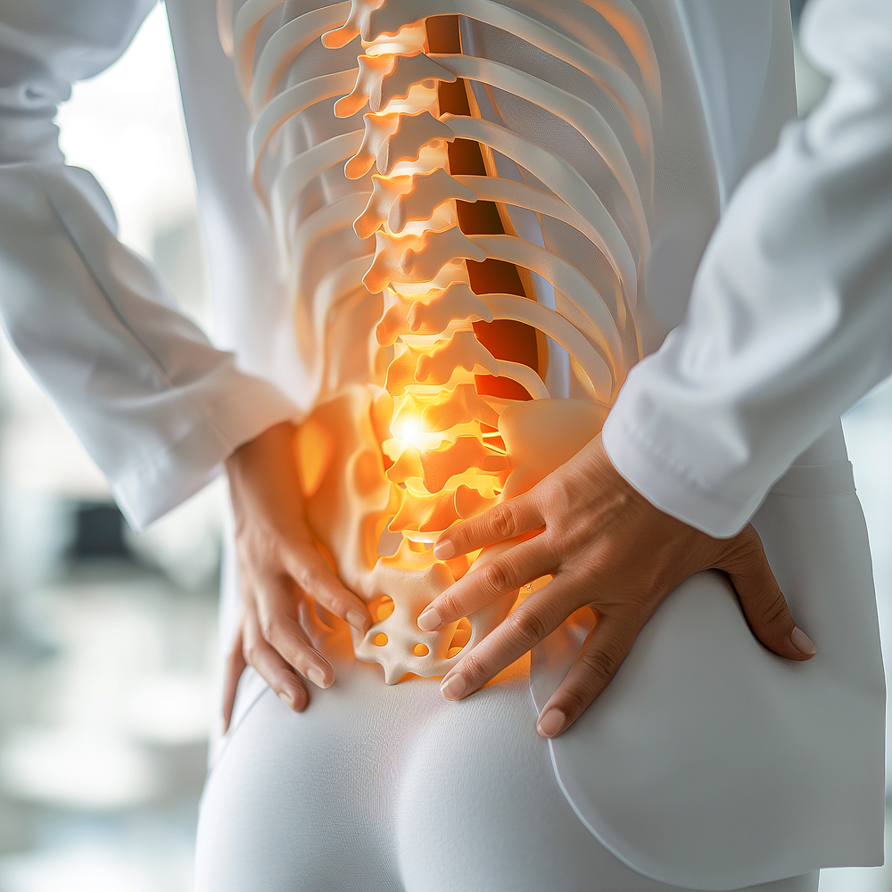

HONEST MADI NEUROLOGY · 파주 동패동
정확한 진단으로 치료의 순서를 분명하게 안내합니다
정직한마디신경과의원은 척추·관절·통증 질환과 두통, 어지럼증, 손발저림을 체계적으로 확인하고 필요한 치료만 정직하게 설명합니다.
정확한 진단원인을 먼저 확인합니다.
2인 협진신경과·정형외과 관점으로 봅니다.
비수술 우선필요한 치료부터 계획합니다.
정확한 진단 · 정직한 설명 · 바른 치료
아프지 않게 걷고 편안하게 잠드는 일상 회복을 목표로 진료합니다.
불편한 증상별 추천 진료
선택한 증상에 따라 추천 진료 설명과 사진이 함께 바뀝니다. 예약 전 참고할 내용을 먼저 확인하세요.
척추센터·관절센터·신경클리닉
신경외과와 정형외과를 중심으로, 필요한 경우 신경과적 평가까지 포함합니다.
허리디스크·좌골신경통
허리 통증과 다리저림의 신경 압박 여부를 확인합니다.
목디스크·팔저림
목 통증, 어깨 결림, 팔저림의 원인을 감별합니다.
척추관협착증
보행 불안, 다리 무거움, 오래 걷기 힘든 증상을 봅니다.
어깨·무릎 관절
회전근개, 오십견, 관절염, 연골 손상을 평가합니다.
뇌졸중 위험관리
혈압, 혈당, 지질, 신경 증상을 함께 점검합니다.
기억력·치매 상담
인지 저하, 집중력 저하, 가족력을 상담합니다.
주사·통증치료
염증과 통증을 단계적으로 조절합니다.
재활·낙상 예방
보행 불안과 회복기 근력 저하를 관리합니다.
한 화면에서 비교하는 비수술 진료
척추, 관절, 신경과적 평가, 재활 관리를 탭으로 확인할 수 있습니다.
신경외과 척추진료
허리디스크, 목디스크, 척추관협착증, 좌골신경통처럼 신경 압박이 의심되는 척추 질환을 중심으로 봅니다.
허리디스크목디스크척추관협착증좌골신경통
추천대상허리·다리저림
검사X-ray·신경학적 진찰
치료약물·신경주사
관리자세·운동 교육
정형외과 중심 진료
목·허리, 어깨, 무릎, 손목, 팔꿈치, 발목 통증을 진찰하고 영상검사로 구조적 원인을 확인합니다.
척추·관절 진찰X-ray·초음파관절 주사치료비수술 통증관리
추천대상관절 통증 지속
검사영상 기반 평가
치료약물·주사·물리
예방운동·자세 교육
신경과적 평가 포함
두통, 어지럼, 손발저림, 보행 불안처럼 신경계 확인이 필요한 증상은 신경과적 문진과 진찰을 함께 반영합니다.
두통·어지럼손발저림보행 불안말초신경 평가
장점원인 혼동 감소
초점신경 신호 확인
상담검사 필요성 안내
추적증상 변화 관리
재활·추적관리
급성 통증이 가라앉은 뒤에도 재발을 줄이기 위해 운동, 생활습관, 약물 조정, 재평가 일정을 함께 관리합니다.
운동 교육낙상 예방통증 재평가만성질환 연계
목표재발 감소
관리자가 운동 안내
안전낙상 위험 점검
연속성추적 진료
방문 후 진료 흐름
증상 문진, 신경 평가, 관절·척추 평가, 검사 선택, 치료 계획, 추적관리로 이어집니다.
증상 문진
통증 위치와 저림 범위를 확인합니다.
신경 평가
감각, 근력, 반사, 균형 상태를 봅니다.
관절 평가
움직임과 압통을 확인합니다.
검사 선택
필요한 검사만 선별합니다.
치료 계획
약물, 주사, 재활 순서를 정합니다.
추적관리
증상 변화와 재발 위험을 봅니다.
검사·치료 장비 안내
신경계 검사와 근골격계 검사를 증상에 맞게 조합합니다.
신경전도·근전도
저림과 신경 압박 여부를 확인합니다.
근골격 초음파
힘줄, 인대, 염증 상태를 봅니다.
X-ray·골밀도
척추·관절 정렬과 뼈 건강을 살핍니다.
인지기능 평가
기억력 변화를 상담합니다.
주사·약물치료
통증과 염증을 조절합니다.
재활·운동교육
회복과 재발 예방을 돕습니다.
정직한 설명으로 치료 방향을 함께 정합니다
정확한 진단, 정직한 설명, 바른 치료 철학을 의료진 소개에 반영했습니다.
대표원장 · 정직한마디신경과의원
몸의 마디와 신경을 정확하게 보고 필요한 치료만 정직하게 권합니다.
문진, 진찰, 영상 확인을 바탕으로 환자에게 필요한 치료 순서를 분명하게 안내합니다.
주요 진료: 목·허리디스크, 척추관협착증, 어깨·무릎 관절 통증신경 증상 평가: 두통, 어지럼증, 손발저림, 보행 불안치료 방향: 비수술 우선 진료와 추적관리
진료철학
치료의 목표는 건강한 일상의 회복입니다.
아프지 않게 걷는 것, 편안하게 잠드는 것, 가족과 웃으며 일상을 보내는 것을 치료의 방향으로 삼습니다.
파주 동패동에서 척추·관절·신경 증상을 함께 확인합니다
경기 파주시 초롱꽃로 133-3 퍼스트타워 5층 · 진료예약 및 상담 031-946-7588
031-946-7588퍼스트타워 5층진료예약·상담